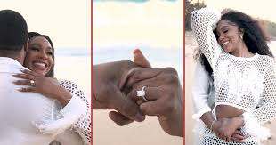

Nollywood actress Sharon Ooja has narrated how she met and got engaged to her husband, Ugo Nwoke, in less than six months.In March, Ooja announced that she had a private civil wedding ceremony with her husband, whom she affectionately calls ‘Odogwu Silencer.’ On Thursday, Ooja shared pictures and videos of her traditional wedding, held in Abuja, on her Instagram page. It marked the first time she would reveal her man’s identity to curious fans.The event was attended by various celebrities, including Funke Akindele, Shaffy Bello, Ini Dima-Okojie, Nancy Isime, Real Warri Pikin, BBNaija’s Bisola, and Tola Odunsi, Hilda Baci, Veekee James, among others.
During an interview with BellaNaija (a lifestyle, entertainment, and fashion website), the ‘Oloture’ star reflected on her love story and shared the whirlwind romance that led to her quick wedding. She said: “My love story is one that I’d say is nothing short of a miracle. I had just recovered from what I consider the worst heartbreak of my life. I was filming, and my sister mentioned that a friend wanted to speak to me. I replied that I wasn’t in the mood to talk to anyone. Nevertheless, she gave this person my contact information, and he turned out to be innovative. I wondered who this person was."
“We probably didn’t speak as much as we should have. Months passed, and he kept trying to reach out to me. I thought, ‘This guy is persistent.’ We had many cute conversations, and one day, we talked for maybe three hours. I’m not joking; it was one of those conversations where I thought, ‘I think I like this guy.’ We dated for two and a half months, and I was engaged in the third month and married two months after that. I love it.”
-
Amazing man
The 33-year-old said she knew she would marry her husband because he was peaceful. “When I travelled, I realised he hadn’t called me for about two days, and I asked him why he didn’t call me. He said, ‘Well, it seemed like you told me you were going out to have fun.’ I responded, ‘Yes, I’m single.’ Then he said, ‘Well, I don’t think I want you to be single anymore.’” Ooja, who rose to fame for her role as Shalewa in the web series ‘Skinny Girl in Transit’, added that before meeting her husband, she had already discussed settling down with God. The Benue-born actress described her husband as the most amazing man she has ever met. “When filming in the desert, I talked with God about settling down. I felt like the Holy Spirit was stripping me of all the pain I had been through in my past, and all I knew was the Holy Spirit kept saying to me that my husband had come. “That’s all I remember. Now I understand what people mean when they say that when you meet the right person, you know. He’s my person, and I’m genuinely grateful to God for him,” said the mass communication graduate from Houdegbe North American University Benin.
-
PDAs
In 2022, Ooja, on her Snapchat, said she would not publicise her relationship because she believed there was no need to seek validation from the world. The separation between Kanye West and Kim Kardashian West influenced the actress’s decision. In the now-deleted Snapchat post, Ooja revealed she understands why celebrity coule Jay-Z and Beyoncé keep their personal lives private and off social media. She said: “After witnessing Kanye West and Kim’s drama, I truly understand why Jay-Z and Beyoncé keep their private lives out of social media. I’ve never been a fan of social media PDAs (public displays of affection). I’ve always believed you don’t need to prove it to the world if you’re pleased. Do your thing peacefully and genuinely be happy because the same people who applaud you for everything will be the first to criticise you once things go south.
-
Life competition
Mr Nwoke stated that the actress completed his life, emphasising that he gained an incredible sister and a fantastic wife. The Imo-born man described his wife as a unique, accomplished, wonderful, talented, and hardworking woman. He said: “I am truly honoured to be here today to celebrate the love that is quite amazing and just unbelievable. I want to introduce you to the love of my life, Sharon Ooja, who is now Sharon Ooja Nwoke. Sharon is, first of all, a unique, accomplished, incredibly beautiful, talented, and hardworking woman born to these beautiful parents sitting here and this beautiful queen. “This man and woman gave birth to this amazing woman and did a phenomenal job raising her. So to them, I’m grateful and honoured that you allowed me to be a part of your family.”